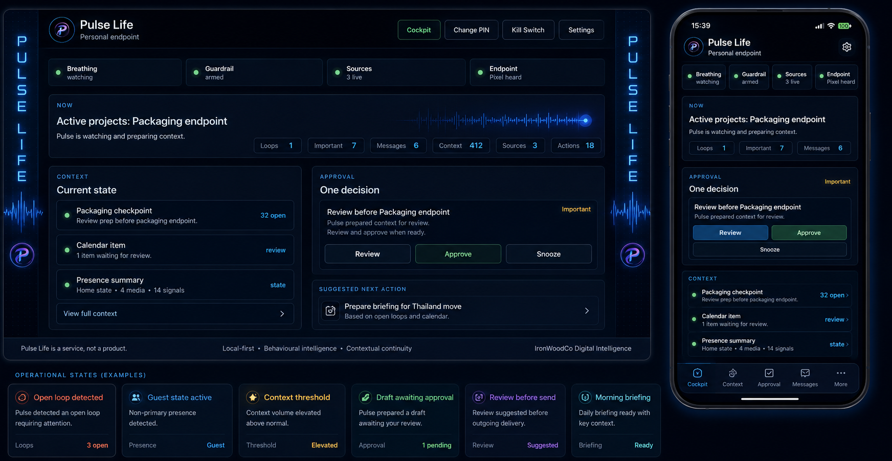
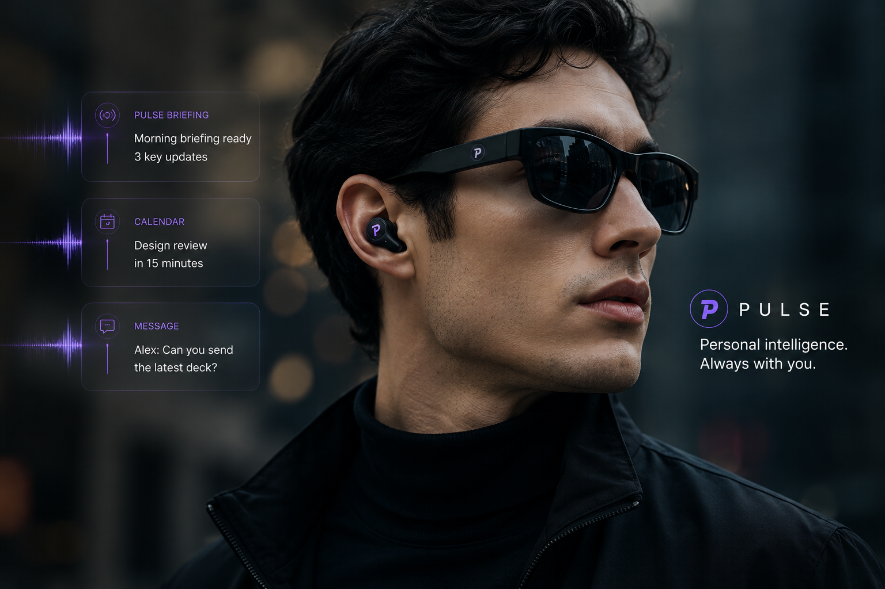
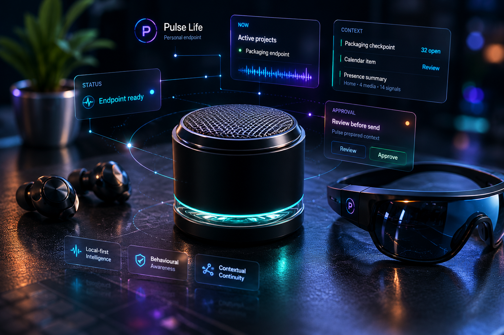

Behavioural intelligence
Pulse Life builds relevance from observed behaviour. Timing, interaction patterns, ignored items, delayed actions, approvals, and repeated friction all become signals that shape future decisions.
A locally-hosted intelligence system designed to coordinate communication, environment, media, timing, and behavioural context through one adaptive AI-native layer.
Pulse Life continuously learns patterns across messages, routines, media activity, location, room state, unfinished tasks, and behavioural timing. Its role is not to interrupt constantly, but to understand when attention is genuinely useful.

Pulse Life builds relevance from observed behaviour. Timing, interaction patterns, ignored items, delayed actions, approvals, and repeated friction all become signals that shape future decisions.
Pulse Life learns when The Ecosystem Participant is likely to act, when interruption becomes noise, and when silence is the more intelligent response.
The platform tracks unresolved situations, stalled actions, and expected-but-missing outcomes instead of relying only on notifications and reminders.
Communication, environment, media state, location, publishing activity, and room context become part of one continuously evolving intelligence model.
Voice endpoints, private audio delivery, screens, and contextual prompts create a system that remains personal without becoming intrusive.
Pulse Life can prepare responses, recommendations, publishing actions, and workflow decisions while keeping external actions deliberate and reviewable.

Most systems surface everything. Pulse Life focuses on what matters now.
Signals are weighed by consequence, delay tolerance, and the cost of missing the moment.
Historical action patterns help identify when The Ecosystem Participant is likely to respond, decide, or defer.
Room state, media activity, location, and attention state shape whether the right answer is delivery or silence.
Expected outcomes, stalled threads, social context, and unfinished decisions remain visible to the intelligence layer.
The goal is not maximum visibility. The goal is useful intervention.
“Pulse Life earns trust by being mostly silent.”
Pulse Life acts as the coordination layer above the wider Pulse platform.
Speech, room presence, and private delivery become signals inside the same contextual model.
Music, viewing activity, and attention state help shape timing, surfacing, and interruption cost.
Public updates, draft states, approval paths, and ecosystem changes connect back to the intelligence layer.
Interaction history and repeated patterns make coordination more precise across every Pulse surface.
The other Pulse surfaces are specialised expressions of the same underlying intelligence system.

Pulse Life continuously coordinates signals across voice endpoints, media systems, publishing workflows, environment, timing, and behavioural context through one adaptive intelligence layer.
Pulse Life does not operate as a simple event -> rule -> action system.
Current signals are interpreted against environment, media, communication, and routine.
Expected replies, unresolved situations, and stalled decisions are carried forward as context.
Urgency and consequence are weighed against attention state and interruption cost.
Past timing, approvals, dismissals, and repeated friction shape future judgement.
The system prefers delayed relevance over immediate noise.